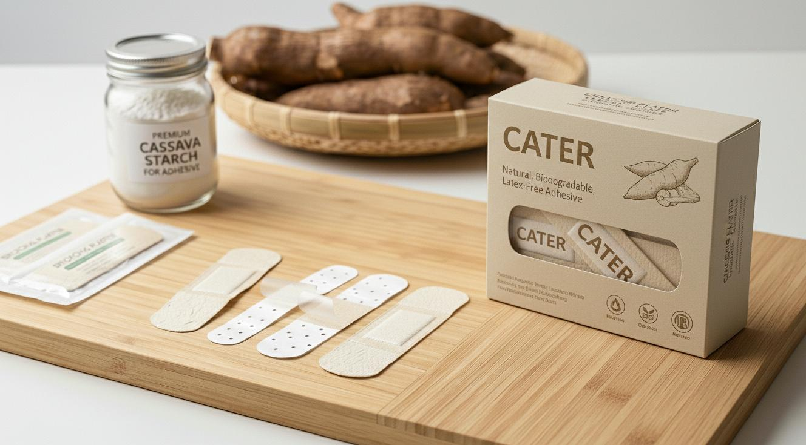
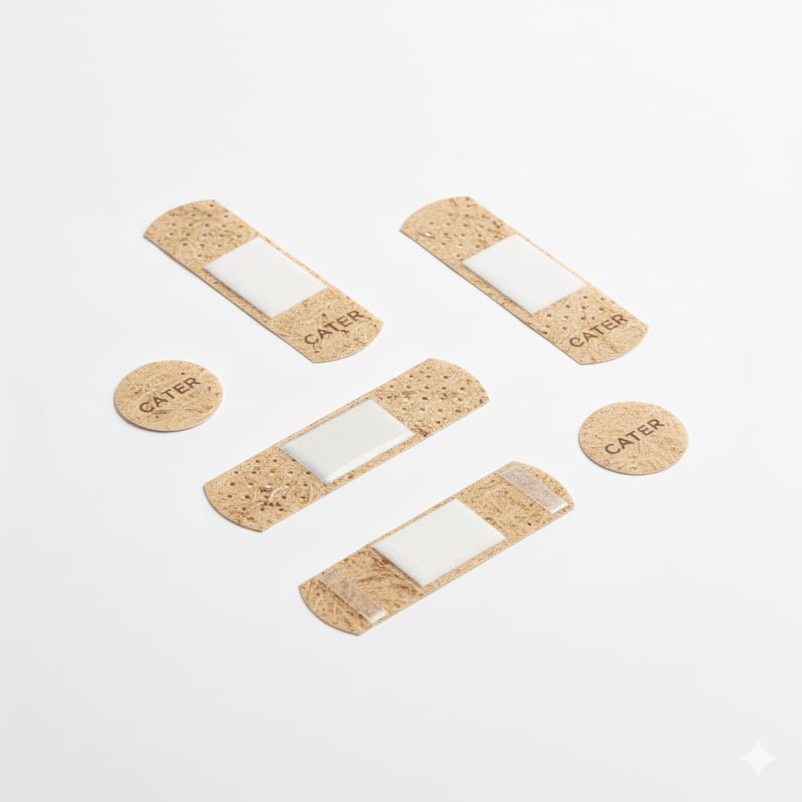
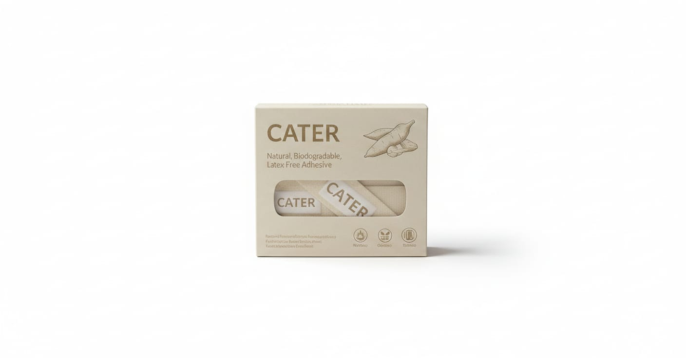
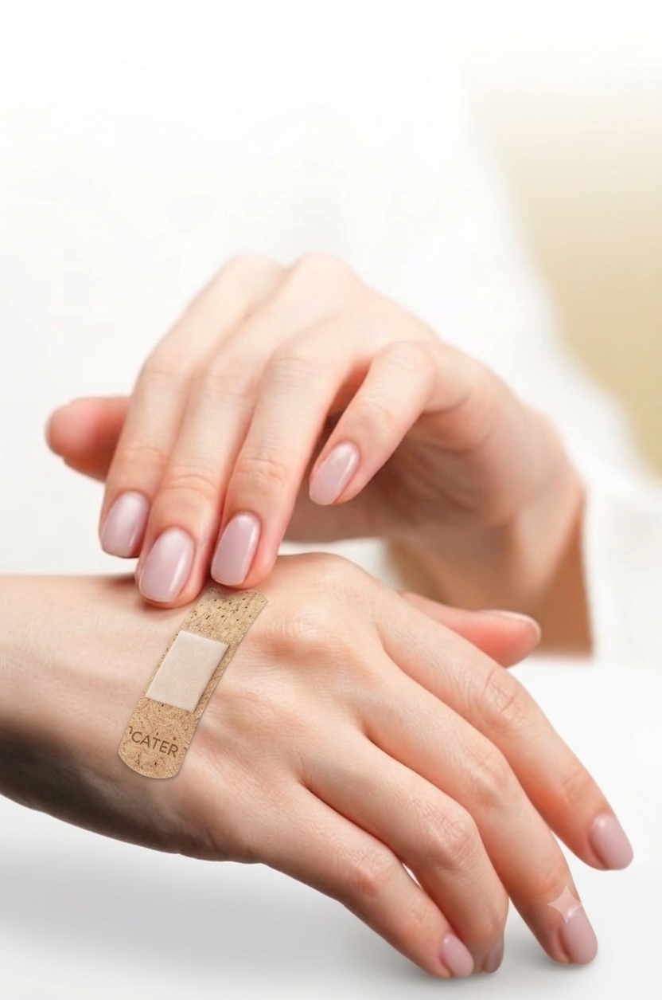

Melindungi luka kecil dengan bahan alami yang lebih aman bagi kulit sekaligus lebih baik untuk lingkungan. Dibuat menggunakan perekat berbasis tepung singkong yang biodegradable.

CATER merupakan plester luka inovatif yang menggunakan perekat alami berbahan dasar tepung singkong (*cassava starch*) sebagai alternatif perekat sintetis. Produk ini dirancang untuk memberikan perlindungan optimal pada luka ringan sekaligus mengurangi dampak negatif sampah plastik terhadap lingkungan.
Dengan material kain penutup yang mudah terurai secara hayati (*biodegradable*), CATER menjadi pilihan utama bagi gaya hidup modern yang peduli terhadap kesehatan diri dan keberlanjutan masa depan bumi.
Menggunakan bahan yang dapat terurai secara alami sehingga membantu mengurangi limbah plastik konvensional.
Memanfaatkan formulasi khusus tepung singkong sebagai bahan utama perekat kuat yang alami.
Secara signifikan mengurangi risiko iritasi atau reaksi alergi kulit yang sering disebabkan perekat sintetis.
Menempel dengan presisi mengikuti lekuk tubuh, fleksibel, namun tetap lembut dan tidak sakit saat dilepas.
Porositas material mikro memungkinan sirkulasi udara optimal guna mendukung percepatan penyembuhan luka.
Sangat cocok digunakan untuk proteksi higienis luka kecil seperti goresan, lecet, maupun sayatan ringan.



| Spesifikasi | Keterangan |
|---|---|
| Nama Produk | CATER Medical Cassava Plaster |
| Jenis Produk | Plester Luka Ringan (First Aid Strip) |
| Bahan Perekat | Tepung Singkong (Cassava Starch Adhesive) |
| Material Dasar | Biodegradable Organic Fabric |
| Bebas Lateks | Ya (100% Latex-Free) |
| Indikasi | Luka gores, lecet, luka sayat permukaan minim |
| Kemasan | Eco-Box Pack (Isi Higienis Per Strip) |
Ya, CATER menggunakan formulasi perekat berbasis singkong yang bebas lateks, sehingga jauh lebih ramah terhadap kulit sensitif dan meminimalisir ruam kemerahan. Namun jika Anda memiliki riwayat hipersensitivitas ekstrem terhadap pati alami, disarankan mengujinya terlebih dahulu di area kulit kecil.
Plester ini mampu menahan percikan air ringan aktivitas harian (splash-resistant). Namun, demi menjaga sterilitas optimal dan mempercepat proses penyembuhan jaringan, kami sangat menyarankan untuk mengganti plester jika kainnya basah kuyup terkena air.
Tidak. Melalui rekayasa biopolimer modern, tepung singkong diolah menjadi lem matriks perekat yang kokoh, stabil, dan memiliki daya rekat yang andal setara plester konvensional untuk penggunaan aktivitas normal sehari-hari.
Betul. Seluruh komponen utama—mulai dari perekat singkong hingga serat anyaman kain pelindungnya—dirancang dari bahan organik yang dapat terurai secara hayati jauh lebih cepat di tanah dibanding senyawa plastik sintetis industri lama.
Pilih CATER sebagai solusi plester luka modern yang mengutamakan kenyamanan personal, perlindungan higienis aman, dan kepedulian tulus terhadap ekosistem lingkungan kita.
*Klaim sifat biodegradable, bebas lateks, dan penggunaan cassava starch terverifikasi pada sertifikasi uji kemasan produk fisik.